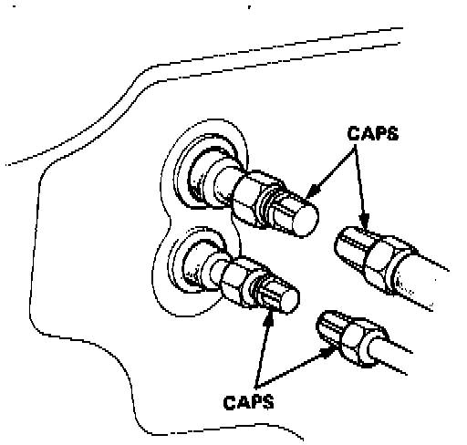
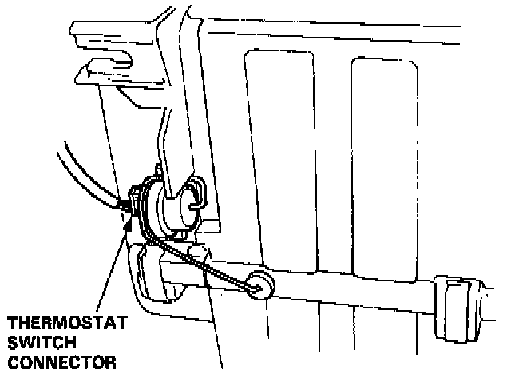
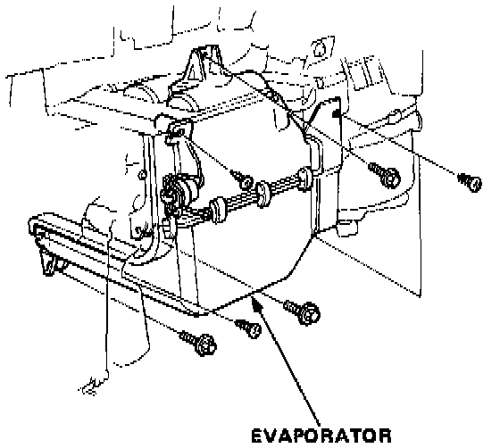

Evaporator Temperature Sensor / Switch: Service and Repair
EVAPORATOR REMOVAL1. Disconnect the battery negative terminal.
2. Recover the refrigerant.

3. Disconnect the receiver line and suction hose from the evaporator.
CAUTION: Cap the open fittings immediately to keep moisture out of the system.
4. Remove the 5 screws, then remove the glove box lower cover and glove box.
5. Remove the 4 screws, then remove the glove box frame and side duct.

6. Disconnect the wire harness from the thermostat switch connector.

7. Remove the 4 tapping screws and 3 mounting bolts.
8. Pull the evaporator away from the body.

9. Remove the thermostat switch from the evaporator.
10. Install in the reverse order of removal, and:
- Apply a sealant to the grommets.
- Make sure that there is no air leakage.
11. Charge the system and test performance.